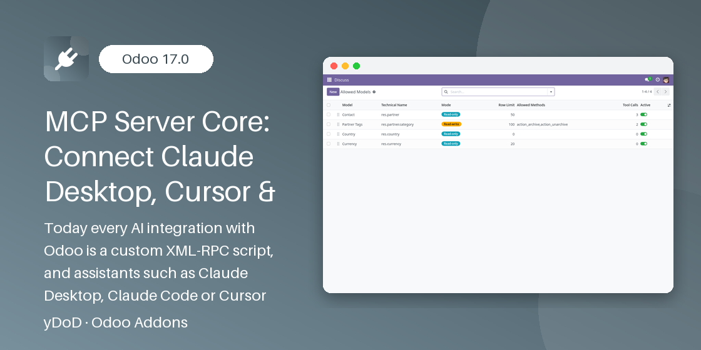

Related Modules
Work even better together with yDoD apps for Odoo 17.0.
yDoD · MODEL CONTEXT PROTOCOL
Connect Claude Desktop, Claude Code, Cursor and any MCP client to Odoo — with a model allowlist, per-user API keys, rate limiting and a complete tool call audit log.
Odoo 17.0 Community & Enterprise

AI assistants such as Claude Desktop, Claude Code and Cursor speak the Model Context Protocol (MCP), but Odoo does not. Until now every AI integration meant writing and maintaining a custom XML-RPC script for each use case. MCP Server Core turns your Odoo database into a native MCP server: paste one URL and the user's standard Odoo API key into your MCP client, and the assistant can list, search, read, create and update the records you allow — nothing more.
Every call runs as the API key's user, so access rights, record rules and multi-company restrictions behave exactly as in the backend. Administrators choose which models are exposed (read-only or read-write), which fields and which public methods the AI may use, how many rows it may fetch, and they get a searchable log of every tool call. There is no LLM inside Odoo and no AI provider key to configure.
Odoo integrators, developers and IT teams who want AI agents to work with Odoo data safely, and administrators who need control and an audit trail over what those agents do.
One standard, secure endpoint replaces ad-hoc scripts: any MCP client connects in minutes, and you decide exactly which data the AI may touch.
Streamable HTTP with JSON or single-frame SSE responses and protocol version negotiation.
Users authenticate with the API key from Preferences > Account Security as a Bearer token.
Expose each model read-only or read-write, with allowed fields, methods and a row limit.
Tool schemas are built from real Odoo fields: types, selections, relations and required flags.
ACLs, record rules and allowed companies apply; portal and archived users are refused.
Calls per minute per API key and a global on/off switch stop runaway agents instantly.
Client, user, tool, arguments, duration, result and error of every call, purged automatically.
Settings show the endpoint URL and ready configuration for Claude Desktop, Claude Code and Cursor.
Menu Settings > Technical > MCP Server > Allowed Models. Each entry defines:
action_confirm; private methods, unlink, sudo and similar are refused on save.odoo://res.partner/7; malformed URIs return -32602.claude mcp add --transport http command for Claude Code.action_confirm in Allowed Methods.claude_desktop_config.json) or Cursor (.cursor/mcp.json), or run the claude mcp add command for Claude Code, and replace the placeholder by the API key.No. The module contains no LLM. The AI runs in your MCP client (Claude Desktop, Claude Code, Cursor...), which calls Odoo through /mcp.
No. Every call runs as the API key's user, with their access rights, record rules and allowed companies, and only on allowlisted models and fields. Portal and archived users cannot connect.
Yes. Calls run with all companies of the user, default company first, and the company record rules of Odoo apply. Administrators see the log of their allowed companies.
No. There is no delete tool, and call_method only runs the public methods listed on a read-write model. Private methods and unlink are refused even if typed in the configuration.
No. The MCP protocol is implemented as a plain Odoo HTTP controller; the module depends only on base, web and mail.
The /mcp endpoint disappears and the allowlist, log and settings of the module are removed. Your business data and users' API keys are untouched.
Need help connecting your MCP client, exposing a specific model or building custom tools for your AI agents? Contact yDoD.
https://profile.dodyakj.online
Developed by Dody Ahmad Kusuma Jaya · yDoD
Work even better together with yDoD apps for Odoo 17.0.